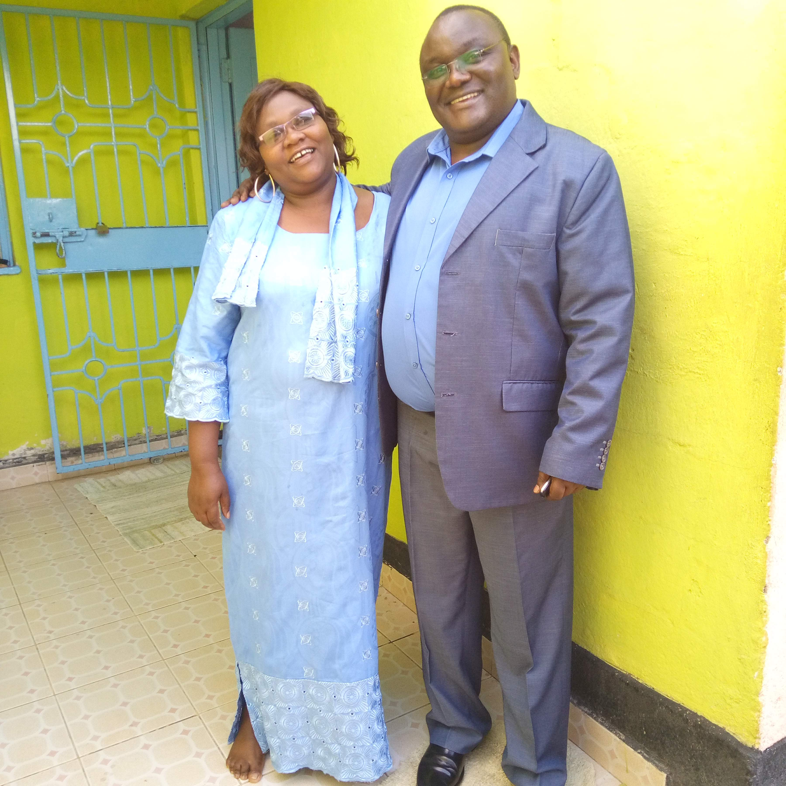
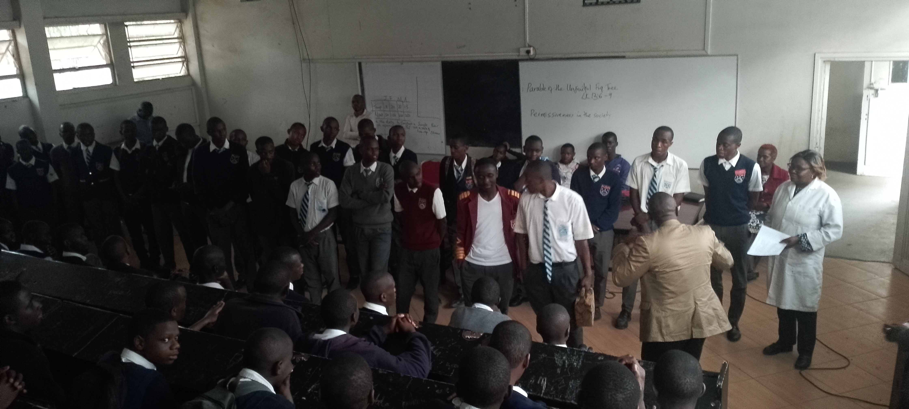
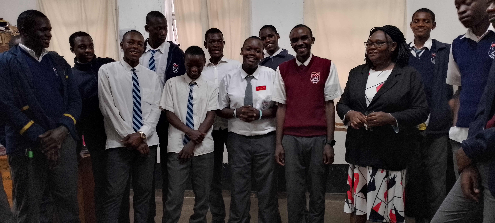
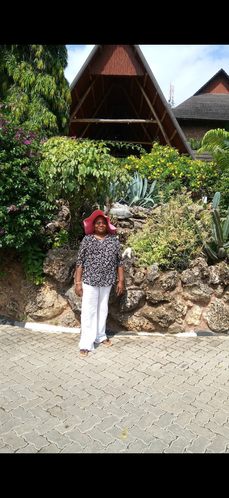
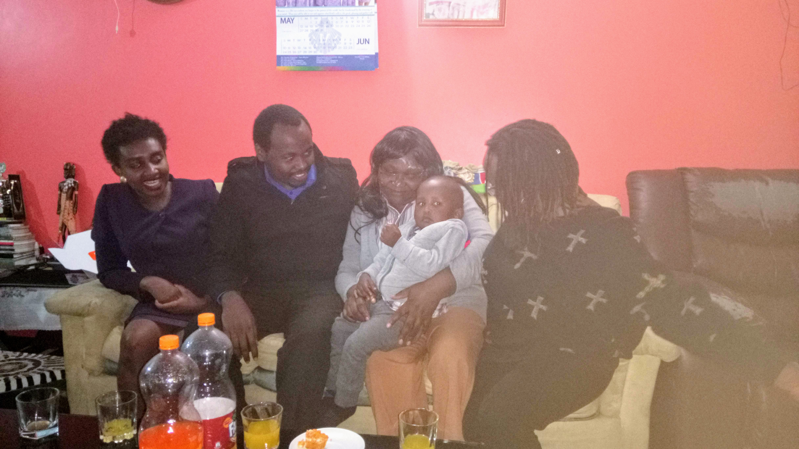

Educator. Mentor. Guide. Geography & R.E. Teacher.
Guidance Counsellor. Mother. Legend.

"She never planned to teach — but teaching was always her calling."
Today we celebrate Jocelyn Murimi Kimemba Kirimi — a woman whose life has been a quiet, powerful testament to love, service, and sacrifice. She did not set out to be a teacher. Teaching found her, and she fell in love with it — and from that moment, she gave it everything she had.
Today I celebrate you and the incredible woman you are. Thank you for the many sacrifices you have made for our family, for the countless prayers you have lifted on our behalf, and for the love and guidance that continue to shape our lives every day. Your strength, patience, and faith have been a pillar for all of us.
As a teacher, you have moulded young minds and inspired so many to believe in themselves. As a mother and grandmother, you have nurtured generations with wisdom, warmth, and unconditional love. As a wife, you have served with humility, compassion, and devotion. Your life is truly a blessing to everyone who knows you.
Beyond the classroom, Jocelyn has always gone further — reaching into her own pocket and heart to support students facing hardship, whether struggling with school fees, family difficulties, or personal battles. No student was ever too broken, too poor, or too lost for her to help. She never asked about their background. She simply showed up — selflessly, consistently, and with grace.
View Photo Gallery →Decades of dedication, one chapter at a time

A few glimpses through the years



Everything in one place